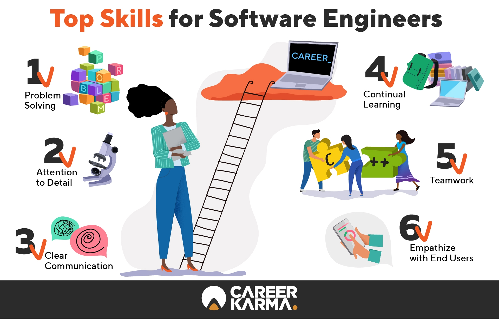

My name is Yulia and I'm a career transitioner whose's currently becoming a Software Engineer with 8+ years of experience in advertising and sales. After 8+ years in advertising and sales, I decided to take a leap and took up a challenge to become a Software Engineer by graduating from Making Changes and ComIT, a full stack immersive coding bootcamps that kick-started my tech career. I love learning/building something new every day. I wholeheartedly believe in making an impact, building relationships, and solving problems. Feel free to reach out, I’m always happy to chat about career transitioning, tech, food (especially ukrainian and russian food), movies, and gaming.
But one question that threw some of my classmates off was, "What if I don't like to be a software developer?" I've been thinking about this a lot lately. After almost a decade leading product and engineering teams, one of my mentors realized he was ready for a new challenge, so this summer, he started freelance technical writing. He didn't know it when he got my first client, but he quickly realized that technical writing is one of many valid career paths for former software engineers.
What Else Can Software Developers Do? Click here, if you want to know more.